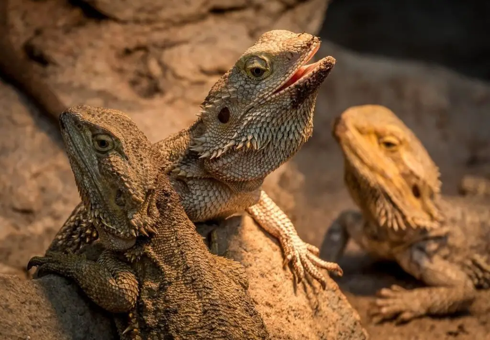
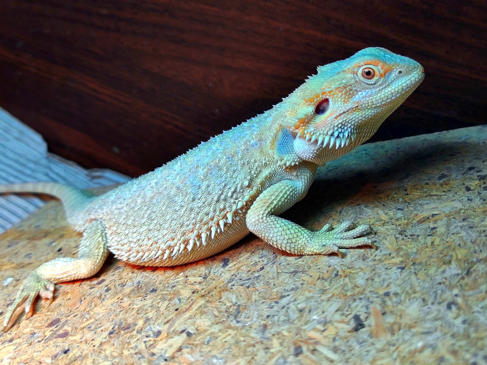
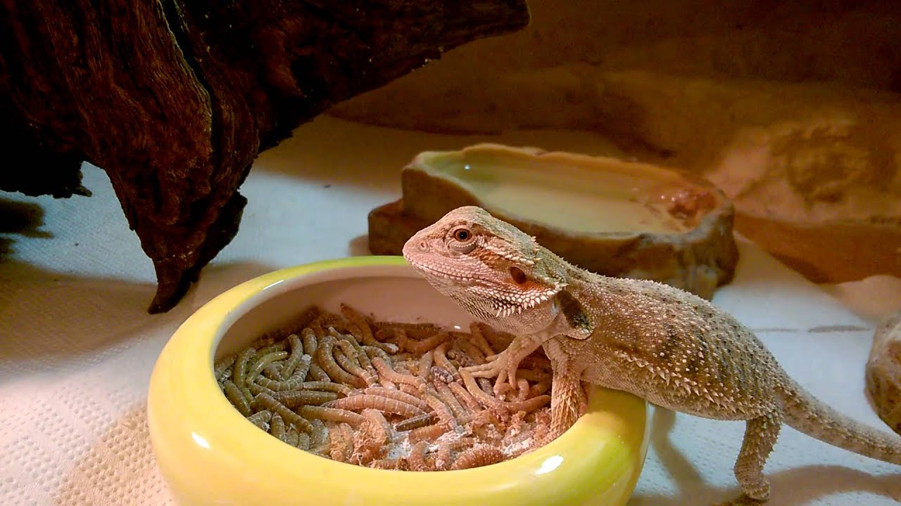

Liczba odwiedzin: 0
Agama brodata (Pogona vitticeps) to gatunek jaszczurki występujący w wielu suchych i półsuchych regionach wschodniej i środkowej Australii. W naturze woli się trzymać ciepłych obszarów:
Należy do rodziny agamowatych, a swoją nazwę zawdzięcza charakterystycznej brodzie, zwanej również workiem gardłowym, która nabiera ciemnej barwy w okresie godowym.

Agamy brodate są hodowane od dziesięcioleci. W latach 60. Australia zakazała eksportu dzikich agam – były one jednak w dalszym ciągu hodowane w Stanach Zjednoczonych, co doprowadziło do powstania wielu nowych odmian kolorystycznych, które nie występują w naturze.

Odmiany kolorystyczne agam| Królestwo | Zwierzęta |
|---|---|
| Gromada | Strunowce |
| Podtyp | Kręgowce |
| Klasa | Gady |
| Rząd | Łuskonośne |
| Podrząd | Iguana |
| Rodzina | Agamowate |
| Rodzaj | Pogona |
| Gatunek | Pogona vitticeps |
Agama brodata to jaszczurka, która prowadzi aktywny dzienny tryb życia i jest przyjaźnie nastawiona do człowieka oraz łatwa w oswojeniu. Jak wszystkie gady, jest to zwierzę zimnokrwiste, a więc temperaturę ciała dostosowuje do temperatury otoczenia. Ogrzewanie pozyskuje z zewnętrznych źródeł ciepła, aby podnieść temperaturę ciała – dzikie osobniki żyjące wolno w naturze korzystają ze światła słonecznego.

Agama brodata jest zwierzęciem niezwykle żarłocznym i wszystkożernym. W naturze oprócz polowania na wszelkiego rodzaju żuki, szarańczaki, gąsienice, a nawet okazjonalnie drobniejsze jaszczurki, czy gryzonie, często podjada liście, kwiaty i inne części roślin występujących na pustyni. Z tego powodu zdrowa dieta powinna składać się z owadów i roślin. Maluszki karmimy przede wszystkim owadami dostosowanymi do rozmiaru pyszczka, takimi jak karaczany tureckie, świerszcze, okazjonalnie larwy mola barciaka, z niewielkim dodatkiem diety roślinnej. Im agama starsza, tym udział roślin w diecie powinien się zwiększyć. Wielu opiekunów twierdzi, że ich agama nie lubi roślin i karmi je wyłącznie owadami, co szybko prowadzi do otłuszczenia, niewydolności wątroby czy nerek, dlatego ważne jest przyzwyczajenie agamy do jedzenia zieleniny od najmłodszego okresu. Podrośnięte brodate gady karmimy dorosłymi świerszczami, karaczanami argentyńskimi lub madagaskarskimi, szarańczą, okazjonalnie larwami drewnojada lub mącznika. Samicom w okresie rozrodczym można podać mysiego noworodka.